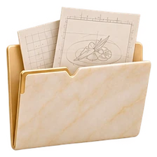
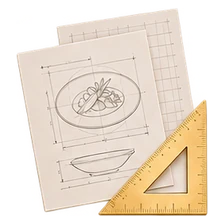
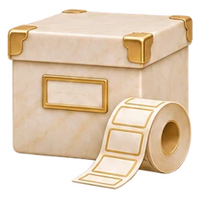

Мои проекты
Рабочие инструменты
Все проекты
Добавляй и редактируй ярлыки, удаляй свои или восстанавливай стандартные ссылки.
Ссылки и избранное сохраняются на устройстве. После входа в MORE SUSHI копия синхронизируется с вашим личным облаком.
ТТК и документы
Рабочий конструктор MORE SUSHI, шаблоны А4 и библиотека.

ЧерновикиНезавершённые карты
Шаблоны А4Премиальные макетыБаза MORE SUSHI
Рецептуры — исходные записи блюд и ПФ. Документы ТТК — отдельные оформленные карты А4. Отсутствие документов не означает потерю рецептур. Все цифры выводятся только после проверки входа.
Рецептуры и ПФ
Исходные рецептуры не являются утверждёнными ТТК. Выбери «Создать черновик ТТК», чтобы перенести состав, массу и технологию в новый несохранённый документ А4. Исходная запись не изменится. Результат нужно проверить и сохранить вручную.
Инструменты
Все необходимые действия шеф-повара в одном месте.
Настройки
Доступ, внешний вид и обновление рабочего пространства.

Старый каталог FARUKH PRINTСкачать резервную копию старых этикеток перед переносомЕдиная оболочка для твоих проектов. Сервисы продолжают работать независимо и могут запрашивать собственный вход.